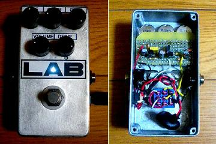
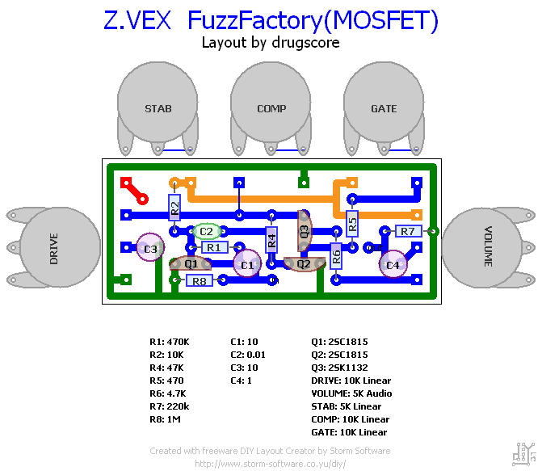
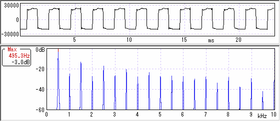

Z.VEX FuzzFactory MOSFETバージョン
2007年08月10日 カテゴリー：自作エフェクター（アナログ）

歪み歪め歪んでくれのr0r0さんが考えたという MOSFETを使ったFuzzFactoryです。やっぱりゲルマニウムトランジスタは温度特性は悪いらしいのでこちらにしました。以前FuzzFace を作ったときはゲルマニウムトランジスタだったんですが、発振しまくりだったのでバラしてしまいました。
▽回路図
松美庵→FuzzFactory 製作記事
またポット一体型でレイアウトを考えてみました。
▽レイアウト

最初なんかイマイチだなぁと思っていたらGATEとCOMPの効きが逆でした。もともとよくわからんコントロールなのでそのままでもいいかと思いましたが一応修正しました（2007年8月10日）。
普通のFUZZの音から飛び道具的発振まで幅広く使えます。適当にツマミをいじってたらラジオの音も出てきました。まぁたぶん普通のFUZZの音しか使わないと思います。
MXRサイズで5個のポットは精度が要りますがなんとかなりました。まだ写真は撮ってませんが、今回は塗装せず少し磨いた程度です。鏡面加工にしようとしたが途中であきらめました。どうせ使っていくうちに傷がつくでしょう。
追記：写真撮ったので画像差し替え
▽波形・倍音特性

GAINフル近くにして測りました。かなり四角くてゴツゴツした波形で、ファズのイメージどおりな感じです。倍音も豊富みたいです。